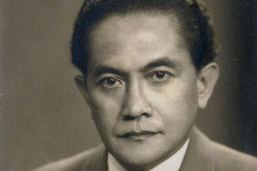
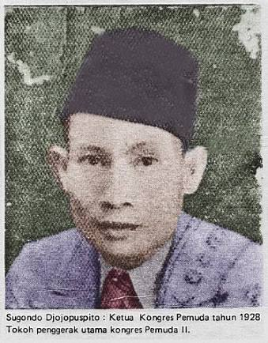
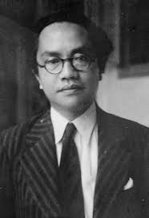

Soenario Sastrowardoyo.

Pemuda asal Madiun, Jawa Timur ini merupakan mantan pengurus Perhimpunan Indonesia (PI) di Belanda dan pencetus Manifesto 1925. Ketika kembali ke Indonesia, ia berperan dalam pembentukan organisasi Jong Indonesia di Bandung.
Dalam Kongres Pemuda II, ia mengambil peran sebagai penasehat panitia. Ia turut menjadi pembicara pada rapat ketiga kongres dan menyuarakan pentingnya semangat nasionalisme dan demokrasi di kalangan pemuda.
Soegondo Djojopoespito

Pemuda kelahiran Tuban, Jawa Timur, ini dipercaya sebagai ketua Kongres Pemuda II yang bertugas memimpin jalannya seluruh kegiatan rapat. Soegondo dikenal sebagai aktivis pendidikan dan anggota dari Persatuan Pemuda Indonesia (PPI).
Amir Syarifuddin Harahap

Pemuda asal Medan, Sumatera Utara ini menjabat sebagai bendahara Kongres Pemuda II. Amir merupakan tokoh yang sangat aktif dalam pergerakan pemuda dan politik pada masa itu.
Ia pernah menjabat sebagai Perdana Menteri Indonesia pada periode 1947-1948.
Mohammad Yamin
.jpg)
Tokoh pemuda asal Minangkabau, Sumatera Barat ini menjabat sebagai sekretaris Kongres Pemuda II. Mohammad Yamin dikenal memiliki talenta yang lengkap sebagai seorang sastrawan, sejarawan, budayawan, politikus, dan ahli hukum.
Ia merupakan salah satu tokoh yang mengusulkan agar Bahasa Indonesia menjadi bahasa persatuan.
Djoko Marsaid
Djoko Marsaid adalah tokoh pemuda asal Jawa Barat yang menjabat sebagai ketua panitia perumusan Sumpah Pemuda. Ia adalah seorang aktivis pemuda yang sangat bersemangat dalam memperjuangkan kemerdekaan Indonesia.